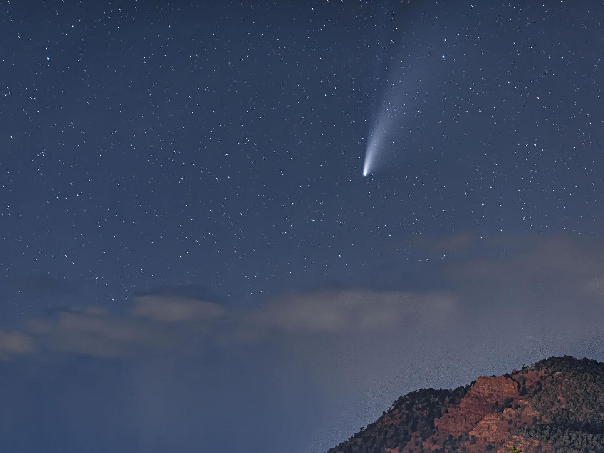

Comets

In the distant past, people were both awed and alarmed by
comets, perceiving them as long-haired stars that appeared in the sky unannounced
and unpredictably. Chinese astronomers kept extensive records for centuries,
including illustrations of characteristic types of comet tails, times of cometary
appearances and disappearances, and celestial positions. These historic comet
annals have proven to be a valuable resource for later astronomers.
We now know that comets are leftovers from the dawn of our solar system around
4.6 billion years ago, and consist mostly of ice coated with dark organic
material. They have been referred to as "dirty snowballs." They may yield
important clues about the formation of our solar system. Comets may have brought
water and organic compounds, the building blocks of life, to the early Earth and
other parts of the solar system.